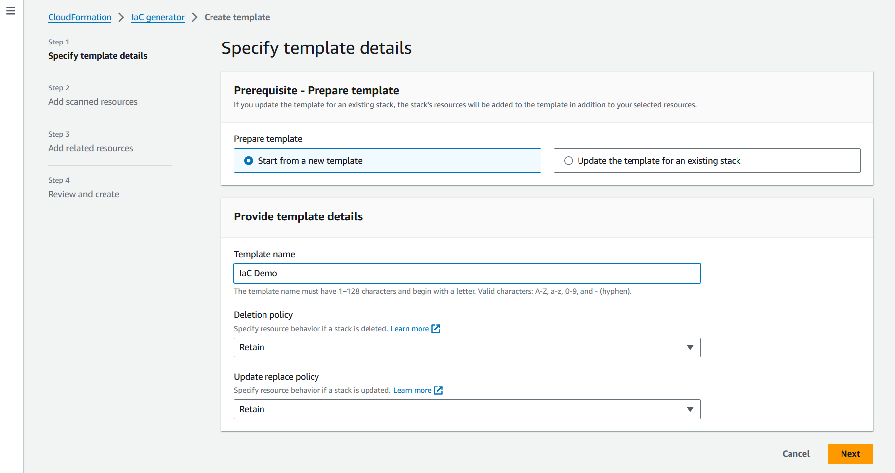
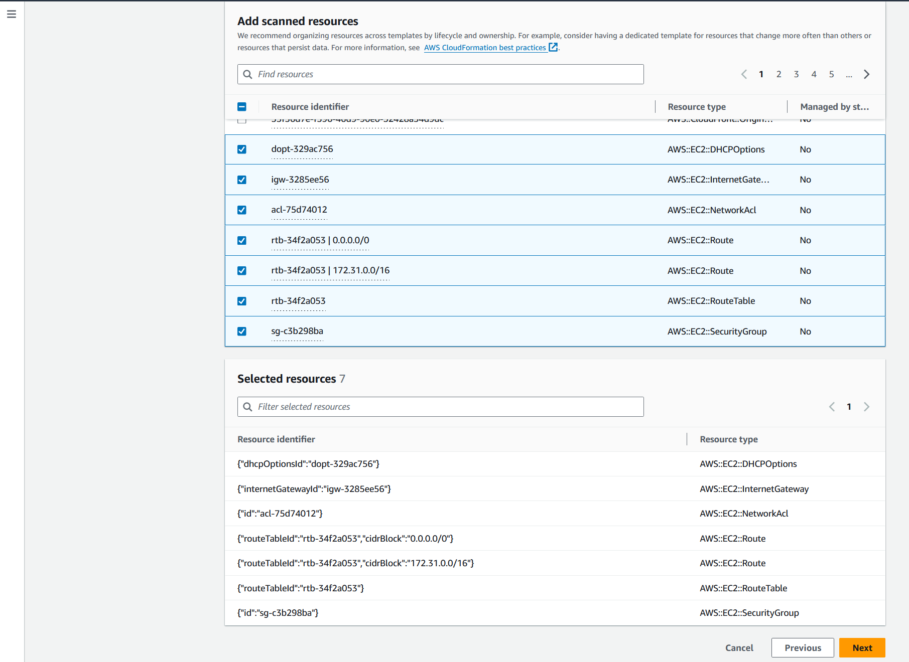
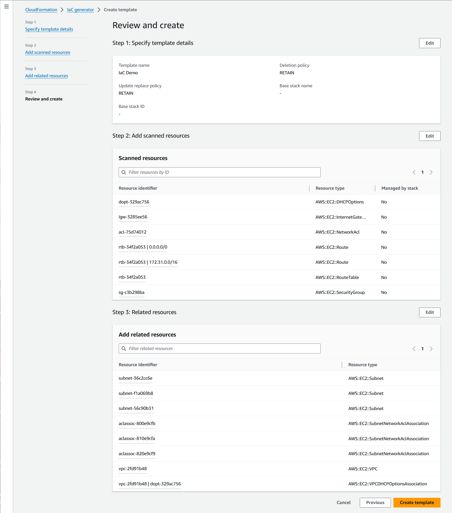

为现有资源生成模板
使用 AWS CloudFormation IaC 生成器（基础设施即代码生成器），您可以使用账户中已预置但尚未由 CloudFormation 管理的 AWS 资源生成模板。使用该模板将资源导入 CloudFormation，或者在新账户或区域中复制资源。
IaC 生成过程由以下几个步骤组成：
-
开始扫描您的账户。
-
创建模板，可以从头开始创建，也可以使用现有堆栈的模板作为起点。
-
使用添加资源向导将扫描的资源和相关资源添加到模板中。
-
将要由 CloudFormation 管理的资源作为堆栈导入，或者将其迁移到 AWS CDK 应用中。
IaC 生成器功能适用于所有商业区域，并支持许多常见的 AWS 资源类型。有关完整列表，请参阅资源类型支持。
主题
注意事项
对于您拥有读取权限的资源，您可以为发布到 CloudFormation 注册表的 AWS 资源生成 JSON 或 YAML 模板。IaC 生成器功能模板晋江可靠、快速地对云资源进行建模，而无需按属性描述资源属性。
下表列出了 IaC 生成功能的可用限额。
| 名称 | 值 |
|---|---|
|
一次账户扫描可以处理的最大资源数 |
100000 |
|
每天的扫描次数（适用于少于 10,000 个资源的账户） |
3 |
|
每天的扫描次数（适用于超过 10,000 个资源的账户） |
1 |
|
每个账户生成的并发模板数量 |
5 |
|
为一次模板生成建模的并发资源数量。 |
5 |
|
可以在一个模板中建模的资源总数 |
500 |
重要
IaC 生成器仅支持您所在区域的 Cloud Control API 支持的资源。有关更多信息，请参阅《Cloud Control API 用户指南》中的确定资源类型是否支持 Cloud Control API
生成模板（控制台）
本节介绍如何使用 IaC 生成器功能创建模板、向模板添加资源以及如何将资源从模板导入堆栈。
使用 IaC 生成器打开新模板
登录到 AWS Management Console 并打开 AWS CloudFormation 控制台 https://console.aws.amazon.com/cloudformation
。 -
从导航窗格中，选择 IaC 生成器。

-
从扫描面板中，选择开始新扫描。扫描会发现您账户中预置的资源以及资源之间的关系。您在该区域的账户中拥有的资源越多，扫描所需的时间就越长。

-
从模板面板中，选择创建模板。
-
选择从新模板开始。
-
在模板名称面板中，输入生成的模板的名称。
-
（可选）配置您的删除策略和更新替换策略。
-
选择下一步将扫描的资源添加到模板中。
-
向模板添加扫描的资源
-
从扫描的资源列表中，浏览已扫描的资源列表。您可以按资源标识符、资源类型或标签筛选资源。筛选器是互相包容的。
 -
选择要添加的一个或多个资源。
重复步骤 1 和 2，直到将所有所需资源都添加到模板中。

-
选择下一步退出添加扫描的资源页面，然后进入添加相关资源页面。
-
查看推荐的相关资源列表。诸如 Amazon EC2 实例和安全组之类的相关资源是相互依赖的，通常属于同一个工作负载。选择要包含在生成的模板中的相关资源。
注意
建议您将所有相关资源添加到此模板中。

-
查看模板详细信息、扫描的资源和相关资源。选择编辑以进行任何更改。
-
选择创建模板退出查看并创建页面并创建模板。

结果：您已开始创建 CloudFormation 模板并添加扫描的资源和相关资源。
将要由 CloudFormation 管理的资源作为堆栈导入
-
选择导入到堆栈，然后选择下一步。
-
在指定堆栈详细信息页面的指定堆栈面板上输入堆栈名称。选择下一步。
-
查看并输入堆栈的参数。选择下一步。
-
在查看更改页面上查看您的选项，然后选择下一步。
-
在查看和导入页面上查看您的详细信息，然后选择导入资源。
结果：使用 IaC 生成器添加到模板的所有资源都将导入到 CloudFormation 堆栈中。
生成模板（AWS CLI）
本节介绍如何使用 AWS CLI 扫描资源、创建模板、向模板添加资源并对其进行更新以及删除模板。
扫描您账户中的资源
-
要在所选区域扫描您账户中的资源，请使用 start-resource-scan 操作。
$aws cloudformation start-resource-scan该命令将返回以下输出：
{ "ResourceScanId": \ "arn:aws:cloudformation:us-east-1:123456789012:resourceScan/0a699f15-489c-43ca-a3ef-3e6ecfa5da60" }
描述账户资源扫描
-
要描述对您账户中资源的扫描，请使用 describe-resource-scan 操作。
$aws cloudformation describe-resource-scan \ --resource-scan-id \ "arn:aws:cloudformation:us-east-1:123456789012:resourceScan/0a699f15-489c-43ca-a3ef-3e6ecfa5da60"该命令将返回以下输出：
{ "ResourceScanId" : \ "arn:aws:cloudformation:us-east-1:123456789012:resourceScan/0a699f15-489c-43ca-a3ef-3e6ecfa5da60", "Status": "complete", "StartTime": "2023-08-21T03:10:38.485000+00:00", "EndTime": "2023-08-21T03:20:28.485000+00:00", "PercentageCompleted": 100.0, "ResourceTypes": [ "AWS::EKS::Cluster", "AWS::S3::Bucket" ], }
列出扫描的所有资源
-
要列出在扫描中找到的资源，请使用 list-resource-scan-resources 操作。响应中包含一列，指示 CloudFormation 是否已管理该资源。
$aws cloudformation list-resource-scan-resources \ --resource-scan-id \ "arn:aws:cloudformation:us-east-1:123456789012:resourceScan/0a699f15-489c-43ca-a3ef-3e6ecfa5da60" \ --resource-identifier exampleResource该命令将返回以下输出：
{ "Resources": [ { "ResourceType": "AWS::EKS::Cluster", "ResourceIdentifier": { "ClusterName": "exampleResourceCluster" } }, "ManagedByStack": false { "ResourceType": "AWS::S3::Bucket", "ResourceIdentifier": { "BucketName": "exampleResourceBucket" }, "ManagedByStack": false } ] }在此示例中，假设
list-resource-scan-resources的输出保存到名为resources.json的 JSON 文件中。
列出与您扫描的资源相关的所有资源
-
要列出与您扫描的资源相关的资源，可创建最多 100 个扫描资源的批次，并对每个批次使用 list-resource-scan-related-resources 操作。请注意，输出列表中可能包含重复的资源。
响应中包含一列，表明 CloudFormation 是否已管理该资源。建议您将所有相关资源添加到模板中。
$aws cloudformation list-resource-scan-related-resources \ --resource-scan-id \ "arn:aws:cloudformation:us-east-1:123456789012:resourceScan/0a699f15-489c-43ca-a3ef-3e6ecfa5da60" \ --resources file://resources.json该命令将返回以下输出：
{ "RelatedResources": [ { "ResourceType": "AWS::EKS::Nodegroup", "ResourceIdentifier": { "NodegroupName": "exampleNodegroup" }, "ManagedByStack": false }, { "ResourceType": "AWS::IAM::Role", "ResourceIdentifier": { "RoleId": "arn:aws::iam::123456789012:role/S3Access" }, "ManagedByStack": false } ] }注意
资源输入列表的长度不能超过 100。要列出 100 个以上资源的相关资源，请以 100 个操作分批运行，然后合并结果。
假设
list-resource-scan-related-resources的输出也添加到名为resources.json的 JSON 文件中。
生成模板
-
要生成没有资源的新模板，请使用 create-generated-template 操作并指定模板名称。
$aws cloudformation create-generated-template \ --generated-template-nameTemplateNamecreate-generated-template命令将返回以下内容。{ "Arn": \ "arn:aws:cloudformation:us-east-1:123456789012:generatedtemplate/7fc8512c-d8cb-4e02-b266-d39c48344e48", "Name": "TemplateName" }
使用资源更新生成的模板
-
要更新新创建的模板，您可以指定要添加的资源列表。在此示例中，我们使用文件
resources.json。下面是resources.json的 JSON 文本文件：[ { "ResourceType": "AWS::EKS::Cluster", "LogicalResourceId":"Cluster", "ResourceIdentifier": { "ClusterName": "exampleResourceCluster" } }, { "ResourceType": "AWS::S3::Bucket", "LogicalResourceId":"Bucket", "ResourceIdentifier": { "BucketName": "exampleResourceBucket" } }, { "ResourceType": "AWS::EKS::Nodegroup", "LogicalResourceId":"Nodegroup", "ResourceIdentifier": { "NodegroupName": "exampleNodegroup" } }, { "ResourceType": "AWS::IAM::Role", "LogicalResourceId":"Role", "ResourceIdentifier": { "RoleId": "arn:aws::iam::123456789012:role/S3Access" } } ]要更新您的模板，请使用 update-generated-template 操作，指定堆栈名称，然后指定文本文件以向模板添加资源。
--cloud-formation-template-configuration选项未包括在内，因此UpdateReplacePolicy和DeletionPolicy策略默认设置为Retain。$aws cloudformation update-generated-template \ --generated-template-nameTemplateName\ --add-resources file://resources.jsonupdate-generated-template命令将返回以下内容。{ "Arn": "arn:aws:cloudformation:us-east-1:123456789012:template/equipment-sorter", "Name": "TemplateName" }
按堆栈名称删除指定的模板
-
要删除生成的模板，请使用 delete-generated-template 操作并指定模板生成名称或模板生成 ARN。
$aws cloudformation delete-generated-template \ --generated-template-nameTemplateName
使用 AWS CDK 生成和管理模板
AWS Cloud Development Kit (AWS CDK) 是一个开源软件开发框架，您可以用来使用流行的编程语言开发、管理和部署 AWS CloudFormation 资源。
AWS CDK CLI 提供了与 IaC 生成器的集成。使用 AWS CDK CLI cdk migrate 命令生成 AWS CloudFormation 模板并创建包含您的资源的新 CDK 应用。然后，您可以使用 AWS CDK 管理您的资源并部署到 AWS CloudFormation。
有关更多信息，请参阅《AWS Cloud Development Kit (AWS CDK) 开发人员指南》中的迁移到 AWS CDK。